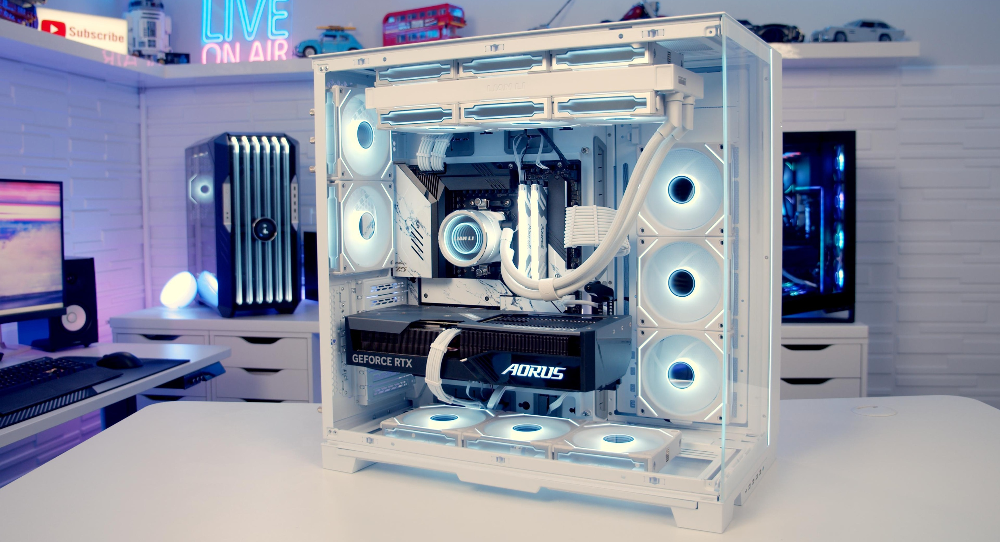
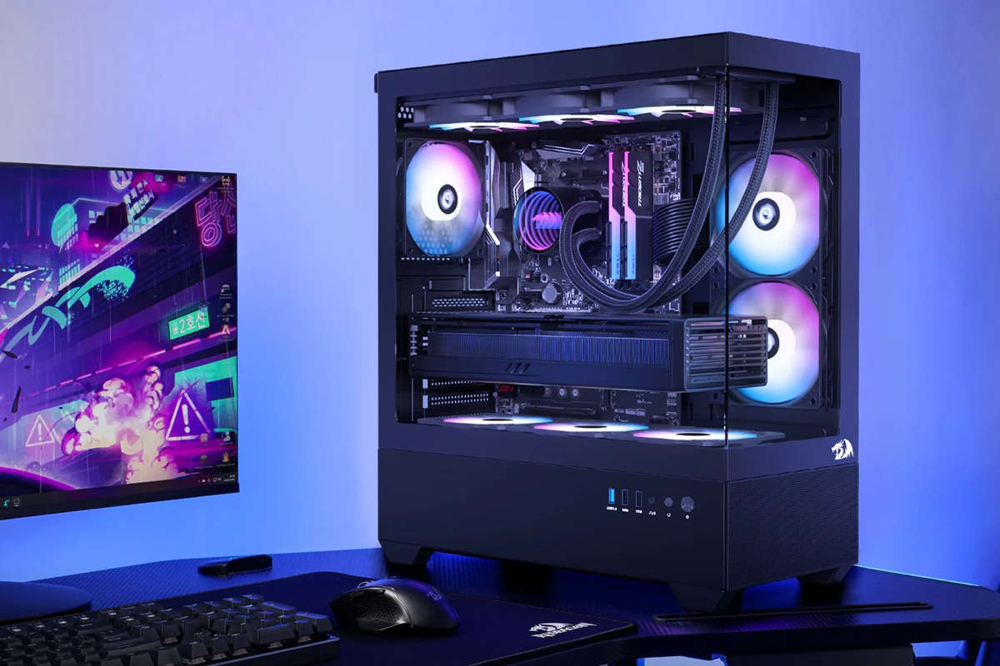
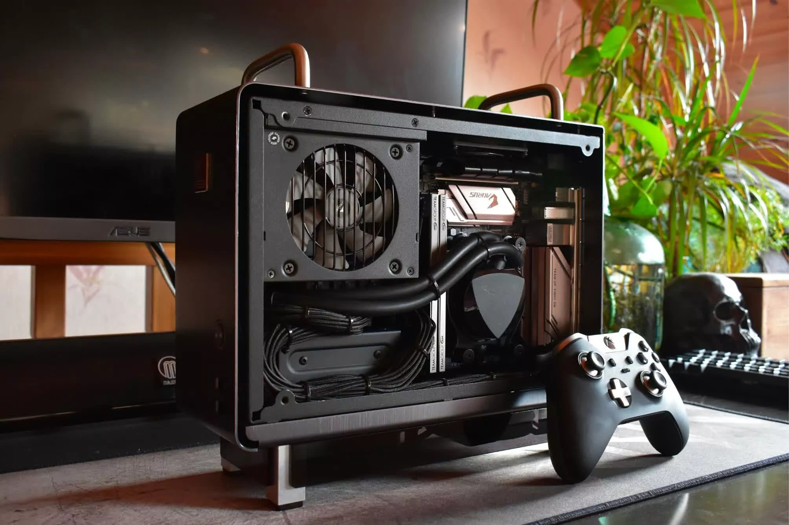
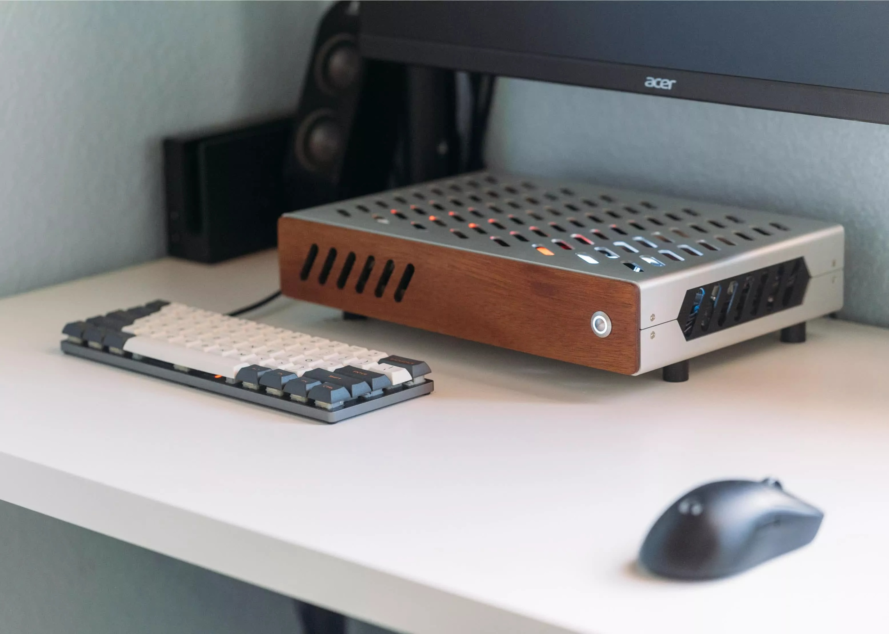
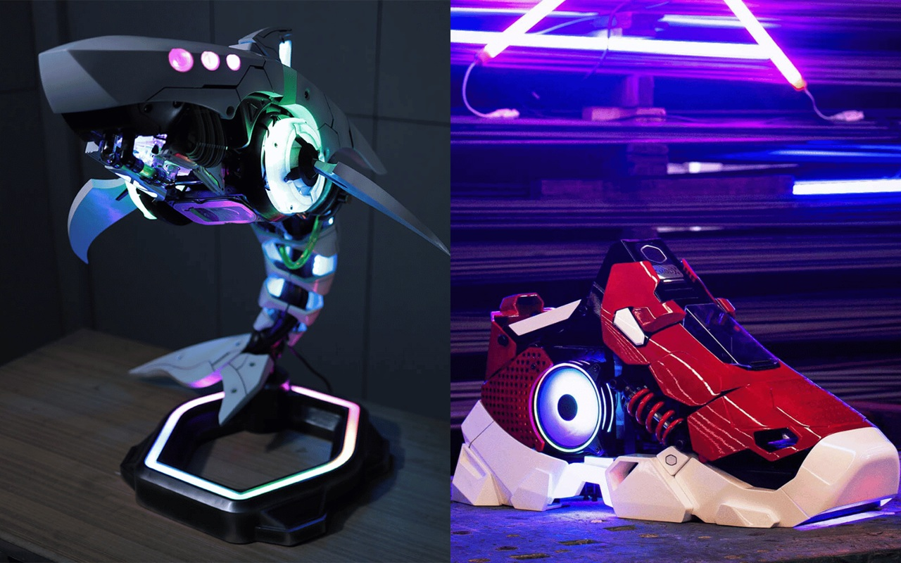

La scelta del case non è solo estetica: detta le dimensioni della Scheda Madre e la lunghezza massima della GPU che potrai montare.

Sono i case più grandi e voluminosi.
È la categoria più popolare e comune nel mercato di consumo, offrendo un buon equilibrio tra dimensioni e funzionalità.


Sono più piccoli e compatti dei Mid Tower, focalizzati sull'efficienza dello spazio.
Estremamente compatti, spesso cubici o simili a console.


Questa categoria si distingue per la modifica o la costruzione da zero, andando oltre gli standard di produzione di massa.